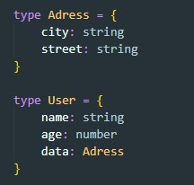
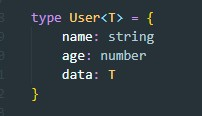

Generics — это возможность создавать компоненты, работающие не только с одним, а с несколькими типами данных
Допустим у нас есть функция которая принимает массив и возвращает его в перевернутом виде
Но как нам указать какой тип данных мы ей передали, ведь массив может иметь числа, может строки, а может и то и другое одновременно. В этом нам и помогу дженерики. Вот как будет выглядеть наша функция с Generics

По сути Generics это указатель типа в угловых скобках. Вот пример указания типа данных массива
